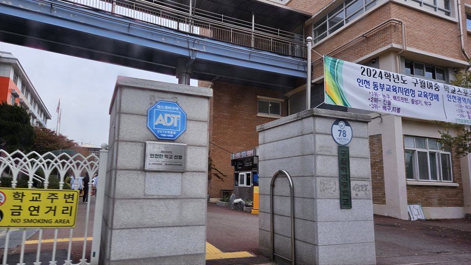

남동구는 관리 중인 중·고등학교만 39곳입니다. 인천남동고등학교·인천만수고등학교·송천고등학교·인천논현고등학교 같은 고등학교와 구월여자중학교·만수중학교·인천서창중학교·인천논현중학교가 구 안에 흩어져 있습니다. 구월·만수 쪽과 논현·서창 쪽은 같은 구라도 오가는 데 시간이 들어서, 저녁이 이동으로 묶이는 학생은 집으로 오는 1:1 고등 사회과외나 중등 수학과외를 따로 찾게 됩니다.
오늘은 남동구로 직접 찾아가는 선생님들 가운데 과목과 방문 동네가 다른 두 분을 소개합니다. 한 분은 사회만 맡아 초등부터 고2까지 보는 선생님, 한 분은 수학만 맡아 초등부터 고3까지 보는 선생님입니다.
남동구에서 고등 사회과외 상담이 들어오는 이유는 대개 분량입니다. 외울 것은 많은데 외운 것이 문제에서 연결되지 않는 상태입니다. 이 선생님은 역사교육을 전공했고, 암기보다 이해를 먼저 시키는 쪽으로 수업을 진행합니다. 사건을 낱개로 외우는 대신 앞뒤를 이어 놓으면 자료 문제에서 볼 곳이 줄어듭니다.
학생들이 특히 어려워하는 주제는 한 페이지 요약본으로 구조를 잡아 줍니다. 문제 풀이도 답을 알려 주는 방식이 아니라 접근하는 순서를 단계로 알려 주는 방식에 가깝습니다. 방문 동네는 남동구 논현동 쪽이고 화상 수업도 가능합니다. 다만 한국사능력검정시험 대비는 하지 않는다고 안내되어 있습니다.
이ㅇ철 선생님 상세 프로필 →남동구에서 중등 수학과외를 찾는 시점은 보통 진도가 아니라 구멍입니다. 지금 배우는 단원이 안 되는 이유가 두 학기 전에 있는 경우입니다. 이 선생님은 학생의 현재 등급을 기준으로 수업을 맞춥니다. 진도를 따라가는 것과 막힌 곳을 메우는 것 중 무엇이 먼저인지를 정하고 시작하는 방식입니다.
지도 범위는 초등 1학년부터 고3까지로 넓고, 미적분·기하까지 다룹니다. 고등 진학 이후에도 같은 선생님으로 이어 가고 싶은 경우에는 이 점이 실제로 편합니다. 방문 동네는 남동구 논현동·남촌동과 연수구 선학동·연수동·동춘동이고, 화상 수업도 가능합니다. 대신 수업 지역 밖으로는 방문하지 않으니 위치를 먼저 맞춰야 합니다.
최ㅇ우 선생님 상세 프로필 →학교마다 진도와 시험 범위가 달라서, 학교별로 준비법을 따로 정리해 두었습니다.
👉 남동구 수학과외 선생님 · 남동구 사회과외 선생님 · 남동구 관리 학교 전체 보기